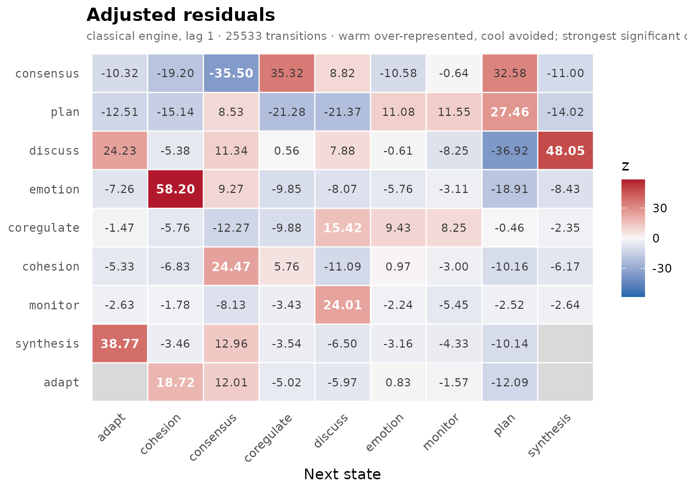
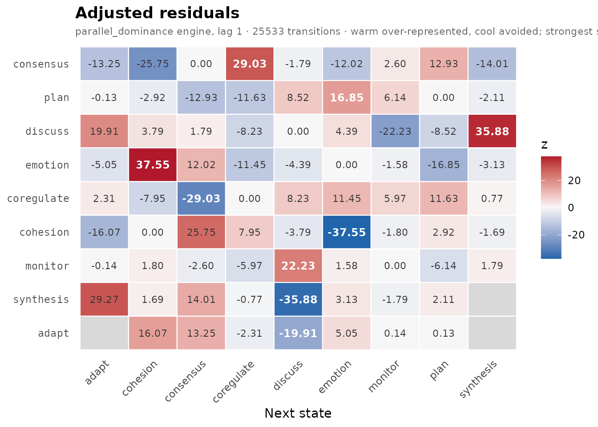

Engines: classical, two-cell, bidirectional and dominance tests
Written by Mohammed Saqr and Sonsoles López-Pernas
Source:vignettes/articles/engines.Rmd
engines.RmdLag sequential analysis starts from one table: the counts of how often state was followed by state at a given lag. Several classical tests can be computed from that table, and they answer different questions. The classical test asks whether a directed transition occurs more or less often than the base rates of and predict (Bakeman & Quera, 2011). The two-cell test asks the same question through the odds ratio of a collapse (Bakeman & Gottman, 1997). The bidirectional test drops direction and asks whether the pair co-occurs more than expected. The two dominance tests ask whether, within the pair, outnumbers (Sackett, 1979; Wampold, 1984).
In lagdynamics each of these tests is an
engine: a function that takes the transition table and returns
per-cell statistics. Every engine is reached through
lsa(data, engine = ) or through a wrapper with the engine
fixed (lsa_classical(), lsa_two_cell(),
lsa_bidirectional(), lsa_parallel_dominance(),
lsa_nonparallel_dominance()), and every fit is read with
the same verbs: transitions(), tests(),
plot(). This guide gives, for each engine, the statistic,
the null hypothesis, the columns it adds to transitions(),
and the question it answers. It then fits all five on the same data,
shows where they agree and where they part ways, and ends with how to
register an engine of your own. The model and its reading verbs are
introduced in the LSA vignette; structural zeros,
which only the classical engine supports, are covered in the lags and structural zeros
guide.
Data
Two bundled datasets are used.
-
engagement: weekly engagement states of 138 students over 15 weeks, one row per student (wide format). States:Active,Average,Disengaged. Two rows are entirely missing, so fits use 136 sequences. With three states each table has nine cells, small enough to print in full. -
group_regulation: coded regulation actions in 2,000 collaborative learning sessions, one row per group session and one column per ordered time point (T1toT26, shorter sessions padded withNA). Nine states:adapt,cohesion,consensus,coregulate,discuss,emotion,monitor,plan,synthesis. Used to compare the engines on a larger table.
The registry lists the engines available in the session.
list_lsa_engines()
#> name
#> 1 bidirectional
#> 2 classical
#> 3 nonparallel_dominance
#> 4 parallel_dominance
#> 5 two_cell
#> description requires
#> 1 Sackett's bidirectional / matched-pair test on the symmetrized table
#> 2 Bakeman & Quera classical lag sequential analysis
#> 3 Sackett's non-parallel-dominance (observed-SE + binomial) test
#> 4 Sackett's parallel-dominance (expected-SE) test
#> 5 2x2 cell test (odds ratio, log-OR Wald z, Yule's Q)The five built-in engines are registered when the package loads. Any
engine added with register_lsa_engine() appears in the same
table.
Classical: adjusted residuals under independence
The classical engine tests each directed cell against sequential independence. With row totals , column totals and transitions, the expected count and the adjusted residual (Haberman, 1973) are
The null for each cell is that the next state does not depend on the current one; is referred to the standard normal. Alongside the residual, the engine reports Yule’s from the collapse of the cell (, , , ), Wampold’s unidirectional kappa with its own and (computed from event totals rather than transition totals), and the tablewise likelihood-ratio and Pearson tests with degrees of freedom. It is the only engine that supports structural zeros.
fit_classical <- lsa_classical(engagement)
fit_classical
#> Lag Sequential Analysis - classical (lag 1, directed)
#> 3 states | 1734 transitions | 1870 events | 136 sequences
#> states: Active, Average, Disengaged
#> independence: G² = 618.3, df = 4, p <2e-16
#>
#> Significant transitions (p < 0.05): 7 of 9
#> strongest over-represented (of 3):
#> Active -> Active z = +21.7 ***
#> Disengaged -> Disengaged z = +15.4 ***
#> Average -> Average z = +12.5 ***
#>
#> Initial states:
#> Active 0.382 ████████████████████████
#> Average 0.368 ███████████████████████
#> Disengaged 0.250 ████████████████
transitions(fit_classical)
#> from to lag count expected prob prob_col adj_res p yules_q
#> 1 Active Active 1 459 247 0.698 0.7051 21.663 4.60e-104 0.828
#> 2 Average Active 1 153 282 0.204 0.2350 -12.906 4.16e-38 -0.601
#> 3 Disengaged Active 1 39 122 0.120 0.0599 -10.549 5.11e-26 -0.698
#> 4 Active Average 1 176 290 0.267 0.2307 -11.319 1.06e-29 -0.534
#> 5 Average Average 1 458 330 0.610 0.6003 12.453 1.35e-35 0.553
#> 6 Disengaged Average 1 129 143 0.397 0.1691 -1.736 8.25e-02 -0.108
#> 7 Active Disengaged 1 23 121 0.035 0.0719 -12.557 3.64e-36 -0.826
#> 8 Average Disengaged 1 140 139 0.186 0.4375 0.176 8.60e-01 0.011
#> 9 Disengaged Disengaged 1 157 60 0.483 0.4906 15.390 1.90e-53 0.754
#> kappa kappa_z kappa_p lift sign significant
#> 1 0.4438 19.19 4.68e-82 1.858 over TRUE
#> 2 -0.4994 -14.70 6.81e-49 0.543 under TRUE
#> 3 -0.7069 -11.46 2.03e-30 0.320 under TRUE
#> 4 -0.4242 -12.48 9.39e-36 0.608 under TRUE
#> 5 0.2275 9.83 7.97e-23 1.386 over TRUE
#> 6 -0.1618 -2.96 3.03e-03 0.902 under FALSE
#> 7 -0.8272 -13.41 5.14e-41 0.189 under TRUE
#> 8 -0.0903 -1.66 9.79e-02 1.010 over FALSE
#> 9 0.3136 13.56 7.34e-42 2.618 over TRUE
tests(fit_classical)
#> test statistic df p
#> 1 lrx2 618 4 1.69e-132
#> 2 x2 629 4 7.41e-135Seven of the nine transitions depart from independence. The three
self-transitions are the over-represented cells (Active to Active,
,
459 observed against 247 expected), and every move between
Active and the other two states is under-represented. The
two transitions out of Disengaged into Average
and out of Average into Disengaged are the
only ones consistent with independence
(
and
).
The tablewise test rejects independence for the table as a whole
(,
df = 4). The answer to the classical question is that weekly engagement
is sticky: students tend to stay where they are, and direct moves
between Active and Disengaged are rare (23 and
39 transitions against expectations of 121 and 122).
Two-cell: the log odds ratio
The two-cell engine collapses each cell into the same table ( above) and tests the odds ratio with a Wald test on its logarithm:
When any of the four counts is zero, 0.5 is added to all four (the
Haldane-Anscombe correction; the amount is the engine parameter
continuity). The null is
:
being in state
does not change the odds that the next state is
.
The residual column adj_res holds this Wald
,
and the engine appends odds_ratio, log_or and
log_or_se. Kappa is not computed and there is no tablewise
test.
transitions(lsa_two_cell(engagement))
#> from to lag count expected prob prob_col adj_res p yules_q kappa
#> 1 Active Active 1 459 247 0.698 0.7051 20.302 1.22e-91 0.828 NA
#> 2 Average Active 1 153 282 0.204 0.2350 -12.541 4.46e-36 -0.601 NA
#> 3 Disengaged Active 1 39 122 0.120 0.0599 -9.658 4.57e-22 -0.698 NA
#> 4 Active Average 1 176 290 0.267 0.2307 -11.096 1.32e-28 -0.534 NA
#> 5 Average Average 1 458 330 0.610 0.6003 12.243 1.83e-34 0.553 NA
#> 6 Disengaged Average 1 129 143 0.397 0.1691 -1.735 8.28e-02 -0.108 NA
#> 7 Active Disengaged 1 23 121 0.035 0.0719 -10.558 4.66e-26 -0.826 NA
#> 8 Average Disengaged 1 140 139 0.186 0.4375 0.176 8.60e-01 0.011 NA
#> 9 Disengaged Disengaged 1 157 60 0.483 0.4906 14.168 1.44e-45 0.754 NA
#> kappa_z kappa_p lift sign significant odds_ratio log_or log_or_se
#> 1 NA NA 1.858 over TRUE 10.620 2.3627 0.116
#> 2 NA NA 0.543 under TRUE 0.249 -1.3896 0.111
#> 3 NA NA 0.320 under TRUE 0.178 -1.7283 0.179
#> 4 NA NA 0.608 under TRUE 0.304 -1.1901 0.107
#> 5 NA NA 1.386 over TRUE 3.475 1.2455 0.102
#> 6 NA NA 0.902 under FALSE 0.805 -0.2175 0.125
#> 7 NA NA 0.189 under TRUE 0.095 -2.3539 0.223
#> 8 NA NA 1.010 over FALSE 1.022 0.0219 0.125
#> 9 NA NA 2.618 over TRUE 7.144 1.9662 0.139The two-cell test flags the same seven transitions as the classical test, with the same signs, and its Yule’s Q column is identical because both engines compute from the same collapse. The values are close but not equal (Active to Active: 20.3 against 21.7) because the Wald statistic uses the standard error of the log odds ratio rather than the expected-count variance. The engine earns its place through its effect size: an odds ratio of 10.6 for Active to Active says that an active week multiplies the odds of another active week by more than ten, and an odds ratio of 0.095 for Active to Disengaged says that an active week cuts the odds of a disengaged one by about a factor of ten.
Bidirectional: the unordered pair
The bidirectional engine asks whether two states follow each other in either order more often than expected. It symmetrises the table, , and computes adjusted residuals on with symmetric margins :
The statistic is symmetric, so the rows
and
carry the same adj_res and p; the fit is
marked undirected. A diagonal cell of
is twice the self-transition count. The engine appends
symmetric_obs
()
and symmetric_exp
();
expected also holds
.
The count, prob, lift and
sign columns are computed from the directed counts, so the
bidirectional result is read from adj_res,
symmetric_obs and symmetric_exp, not from
lift or sign.
transitions(lsa_bidirectional(engagement))
#> from to lag count expected prob prob_col adj_res p yules_q kappa
#> 1 Active Active 1 459 494 0.698 0.7051 30.63 4.29e-206 0.8278 NA
#> 2 Average Active 1 153 571 0.204 0.2350 -17.13 9.61e-66 -0.5675 NA
#> 3 Disengaged Active 1 39 243 0.120 0.0599 -16.34 5.43e-60 -0.7630 NA
#> 4 Active Average 1 176 571 0.267 0.2307 -17.13 9.61e-66 -0.5675 NA
#> 5 Average Average 1 458 661 0.610 0.6003 17.61 2.18e-69 0.5529 NA
#> 6 Disengaged Average 1 129 282 0.397 0.1691 -1.11 2.68e-01 -0.0489 NA
#> 7 Active Disengaged 1 23 243 0.035 0.0719 -16.34 5.43e-60 -0.7630 NA
#> 8 Average Disengaged 1 140 282 0.186 0.4375 -1.11 2.68e-01 -0.0489 NA
#> 9 Disengaged Disengaged 1 157 120 0.483 0.4906 21.76 5.10e-105 0.7544 NA
#> kappa_z kappa_p lift sign significant symmetric_obs symmetric_exp
#> 1 NA NA 0.9290 under TRUE 918 494
#> 2 NA NA 0.2677 under TRUE 329 571
#> 3 NA NA 0.1602 under TRUE 62 243
#> 4 NA NA 0.3080 under TRUE 329 571
#> 5 NA NA 0.6929 under TRUE 916 661
#> 6 NA NA 0.4581 under FALSE 269 282
#> 7 NA NA 0.0945 under TRUE 62 243
#> 8 NA NA 0.4972 under FALSE 269 282
#> 9 NA NA 1.3088 over TRUE 314 120The pair Active/Disengaged occurs 62 times
in either order against 243 expected
(),
and the pair Active/Average 329 times against
571
().
The pair Average/Disengaged is not
distinguishable from independence
().
The bidirectional reading agrees with the classical one but compresses
it: the classical engine needed two cells to say that
Active and Disengaged avoid each other, the
bidirectional engine says it once.
Dominance: which direction wins within a pair
The dominance engines take each pair of states and ask whether one direction outnumbers the other. Both use the difference and differ in its standard error. The parallel-dominance engine scales by the counts expected under independence,
and the non-parallel-dominance engine scales by the observed pair total,
which is the normal approximation to the exact test of
;
that exact p-value is also returned. The null is symmetry within the
pair:
and
are equally likely. The statistic is antisymmetric
()
and a self-transition has no direction, so the diagonal is
,
.
Both engines put the dominance
in adj_res and append dominance
();
the parallel engine adds dominance_se, the non-parallel
engine adds pair_totals and binomial_p. The
expected, lift and sign columns
still describe the independence model, not the dominance test.
transitions(lsa_parallel_dominance(engagement))
#> from to lag count expected prob prob_col adj_res p yules_q kappa
#> 1 Active Active 1 459 247 0.698 0.7051 0.000 1.000 0.828 NA
#> 2 Average Active 1 153 282 0.204 0.2350 -0.962 0.336 -0.601 NA
#> 3 Disengaged Active 1 39 122 0.120 0.0599 1.025 0.305 -0.698 NA
#> 4 Active Average 1 176 290 0.267 0.2307 0.962 0.336 -0.534 NA
#> 5 Average Average 1 458 330 0.610 0.6003 0.000 1.000 0.553 NA
#> 6 Disengaged Average 1 129 143 0.397 0.1691 -0.656 0.512 -0.108 NA
#> 7 Active Disengaged 1 23 121 0.035 0.0719 -1.025 0.305 -0.826 NA
#> 8 Average Disengaged 1 140 139 0.186 0.4375 0.656 0.512 0.011 NA
#> 9 Disengaged Disengaged 1 157 60 0.483 0.4906 0.000 1.000 0.754 NA
#> kappa_z kappa_p lift sign significant dominance dominance_se
#> 1 NA NA 1.858 over FALSE 0 22.2
#> 2 NA NA 0.543 under FALSE -23 23.9
#> 3 NA NA 0.320 under FALSE 16 15.6
#> 4 NA NA 0.608 under FALSE 23 23.9
#> 5 NA NA 1.386 over FALSE 0 25.7
#> 6 NA NA 0.902 under FALSE -11 16.8
#> 7 NA NA 0.189 under FALSE -16 15.6
#> 8 NA NA 1.010 over FALSE 11 16.8
#> 9 NA NA 2.618 over FALSE 0 11.0No pair has a dominant direction under the parallel test. The largest
count difference is between Active and Average
(,
):
students move from Active down to Average 176
times and back up 153 times, a difference well within chance.
transitions(lsa_nonparallel_dominance(engagement))
#> from to lag count expected prob prob_col adj_res p yules_q kappa
#> 1 Active Active 1 459 247 0.698 0.7051 0.000 1.0000 0.828 NA
#> 2 Average Active 1 153 282 0.204 0.2350 -1.268 0.2048 -0.601 NA
#> 3 Disengaged Active 1 39 122 0.120 0.0599 2.032 0.0422 -0.698 NA
#> 4 Active Average 1 176 290 0.267 0.2307 1.268 0.2048 -0.534 NA
#> 5 Average Average 1 458 330 0.610 0.6003 0.000 1.0000 0.553 NA
#> 6 Disengaged Average 1 129 143 0.397 0.1691 -0.671 0.5024 -0.108 NA
#> 7 Active Disengaged 1 23 121 0.035 0.0719 -2.032 0.0422 -0.826 NA
#> 8 Average Disengaged 1 140 139 0.186 0.4375 0.671 0.5024 0.011 NA
#> 9 Disengaged Disengaged 1 157 60 0.483 0.4906 0.000 1.0000 0.754 NA
#> kappa_z kappa_p lift sign significant dominance pair_totals binomial_p
#> 1 NA NA 1.858 over FALSE 0 918 NA
#> 2 NA NA 0.543 under FALSE -23 329 0.2251
#> 3 NA NA 0.320 under TRUE 16 62 0.0559
#> 4 NA NA 0.608 under FALSE 23 329 0.2251
#> 5 NA NA 1.386 over FALSE 0 916 NA
#> 6 NA NA 0.902 under FALSE -11 269 0.5421
#> 7 NA NA 0.189 under TRUE -16 62 0.0559
#> 8 NA NA 1.010 over FALSE 11 269 0.5421
#> 9 NA NA 2.618 over FALSE 0 314 NAThe non-parallel test flags one pair: Disengaged to
Active outnumbers Active to
Disengaged, 39 against 23
(,
,
).
The two dominance tests differ here because the pair is rare. Under
independence the pair would occur 243 times, so the parallel standard
error is
;
it actually occurs 62 times, so the non-parallel standard error is
.
The exact binomial p-value for the same pair is 0.056, above 0.05, while
the significant column follows the normal
.
With a pair total of 62 the exact test is the one to report, and it does
not support a dominant direction: direct jumps between
Active and Disengaged run upward somewhat more
often than downward, but not reliably so.
Where the engines agree and disagree
On the larger group_regulation table the engines can be
compared on the transitions they rank first. The classical and two-cell
engines are printed first.
fit_gr <- lsa_classical(group_regulation)
transitions(fit_gr, significant = TRUE, sort = "strength") |> head(6)
#> from to lag count expected prob prob_col adj_res p yules_q
#> 1 emotion cohesion 1 923 190.9 0.3253 0.5373 58.2 0.00e+00 0.860
#> 2 discuss synthesis 1 557 106.8 0.1410 0.8072 48.0 0.00e+00 0.927
#> 3 synthesis adapt 1 153 13.6 0.2347 0.2881 38.8 0.00e+00 0.904
#> 4 discuss plan 1 46 961.6 0.0116 0.0074 -36.9 2.20e-298 -0.943
#> 5 consensus consensus 1 519 1578.7 0.0820 0.0815 -35.5 5.32e-276 -0.661
#> 6 consensus coregulate 1 1188 519.3 0.1877 0.5671 35.3 3.36e-273 0.647
#> kappa kappa_z kappa_p lift sign significant
#> 1 0.439 55.0 0.00e+00 4.8353 over TRUE
#> 2 0.721 46.1 0.00e+00 5.2168 over TRUE
#> 3 0.256 37.0 2.44e-299 11.2837 over TRUE
#> 4 -0.955 -38.2 2.88e-319 0.0478 under TRUE
#> 5 -0.691 -37.6 7.65e-309 0.3287 under TRUE
#> 6 0.412 34.6 5.06e-262 2.2877 over TRUE
transitions(lsa_two_cell(group_regulation), significant = TRUE,
sort = "strength") |> head(6)
#> from to lag count expected prob prob_col adj_res p yules_q kappa
#> 1 emotion cohesion 1 923 190.9 0.325 0.5373 48.0 0.00e+00 0.860 NA
#> 2 discuss synthesis 1 557 106.8 0.141 0.8072 33.3 1.08e-243 0.927 NA
#> 3 consensus coregulate 1 1188 519.3 0.188 0.5671 32.9 6.20e-237 0.647 NA
#> 4 consensus consensus 1 519 1578.7 0.082 0.0815 -32.8 1.73e-236 -0.661 NA
#> 5 consensus plan 1 2505 1540.3 0.396 0.4031 31.9 1.49e-223 0.465 NA
#> 6 synthesis adapt 1 153 13.6 0.235 0.2881 28.2 3.83e-175 0.904 NA
#> kappa_z kappa_p lift sign significant odds_ratio log_or log_or_se
#> 1 NA NA 4.835 over TRUE 13.285 2.59 0.0539
#> 2 NA NA 5.217 over TRUE 26.467 3.28 0.0983
#> 3 NA NA 2.288 over TRUE 4.662 1.54 0.0468
#> 4 NA NA 0.329 under TRUE 0.204 -1.59 0.0484
#> 5 NA NA 1.626 over TRUE 2.737 1.01 0.0315
#> 6 NA NA 11.284 over TRUE 19.876 2.99 0.1060Both engines rank emotion -> cohesion first
(classical
,
two-cell
)
and agree on the sign of every listed cell, but their orderings differ
below the top: the classical engine puts
synthesis -> adapt third and
discuss -> plan fourth, the two-cell engine puts
consensus -> coregulate third and
consensus -> consensus fourth. The Wald
falls furthest below the adjusted residual for the most lopsided cells:
discuss -> synthesis (odds ratio 26.5) drops from 48.0
to 33.3 and synthesis -> adapt from 38.8 to 28.2, while
consensus -> coregulate (odds ratio 4.66) moves only
from 35.3 to 32.9. The classical
is the statistic to rank by; the odds ratio is the effect size to report
next to it.
The bidirectional engine ranks pairs, so its top rows come in mirrored pairs.
transitions(lsa_bidirectional(group_regulation), significant = TRUE,
sort = "strength") |> head(6)
#> from to lag count expected prob prob_col adj_res p yules_q kappa kappa_z
#> 1 consensus consensus 1 519 3157 0.0820 0.0815 -50.2 0 -0.661 NA NA
#> 2 emotion cohesion 1 923 375 0.3253 0.5373 42.2 0 0.648 NA NA
#> 3 cohesion emotion 1 196 375 0.1156 0.0707 42.2 0 0.648 NA NA
#> 4 plan discuss 1 418 1906 0.0679 0.1067 -41.3 0 -0.717 NA NA
#> 5 discuss plan 1 46 1906 0.0116 0.0074 -41.3 0 -0.717 NA NA
#> 6 plan plan 1 2304 2997 0.3742 0.3708 38.8 0 0.406 NA NA
#> kappa_p lift sign significant symmetric_obs symmetric_exp
#> 1 NA 0.1644 under TRUE 1038 3157
#> 2 NA 2.4621 over TRUE 1119 375
#> 3 NA 0.5228 under TRUE 1119 375
#> 4 NA 0.2193 under TRUE 464 1906
#> 5 NA 0.0241 under TRUE 464 1906
#> 6 NA 0.7688 under TRUE 4608 2997The strongest bidirectional result is a self-transition:
consensus follows itself far less often than independence
predicts
().
The pair emotion/cohesion follows
(),
with 923 transitions one way and 196 the other. The pair
plan/discuss is avoided in both directions
().
The bidirectional view hides the fact that
emotion -> cohesion is the dominant direction of the
pair, which is the question the dominance engines answer.
transitions(lsa_parallel_dominance(group_regulation), direction = "over",
sort = "strength") |> head(5)
#> from to lag count expected prob prob_col adj_res p yules_q kappa
#> 1 emotion cohesion 1 923 190.9 0.325 0.537 37.5 1.59e-308 0.860 NA
#> 2 discuss synthesis 1 557 106.8 0.141 0.807 35.9 5.32e-282 0.927 NA
#> 3 synthesis adapt 1 153 13.6 0.235 0.288 29.3 2.17e-188 0.904 NA
#> 4 consensus coregulate 1 1188 519.3 0.188 0.567 29.0 2.53e-185 0.647 NA
#> 5 cohesion consensus 1 844 422.8 0.498 0.133 25.7 3.65e-146 0.534 NA
#> kappa_z kappa_p lift sign significant dominance dominance_se
#> 1 NA NA 4.84 over TRUE 727 19.36
#> 2 NA NA 5.22 over TRUE 516 14.38
#> 3 NA NA 11.28 over TRUE 153 5.23
#> 4 NA NA 2.29 over TRUE 923 31.79
#> 5 NA NA 2.00 over TRUE 750 29.13
transitions(lsa_nonparallel_dominance(group_regulation), direction = "over",
sort = "strength") |> head(5)
#> from to lag count expected prob prob_col adj_res p yules_q kappa
#> 1 cohesion consensus 1 844 423 0.498 0.133 24.5 1.97e-132 0.534 NA
#> 2 consensus coregulate 1 1188 519 0.188 0.567 24.2 1.58e-129 0.647 NA
#> 3 emotion cohesion 1 923 191 0.325 0.537 21.7 1.00e-104 0.860 NA
#> 4 discuss synthesis 1 557 107 0.141 0.807 21.1 7.82e-99 0.927 NA
#> 5 plan emotion 1 904 668 0.147 0.326 18.0 1.25e-72 0.235 NA
#> kappa_z kappa_p lift sign significant dominance pair_totals binomial_p
#> 1 NA NA 2.00 over TRUE 750 938 1.75e-151
#> 2 NA NA 2.29 over TRUE 923 1453 1.50e-139
#> 3 NA NA 4.84 over TRUE 727 1119 3.36e-113
#> 4 NA NA 5.22 over TRUE 516 598 1.07e-116
#> 5 NA NA 1.35 over TRUE 621 1187 5.20e-76With direction = "over", each pair appears once, in its
dominant direction. The parallel test ranks
emotion -> cohesion first
(,
)
and the non-parallel test ranks cohesion -> consensus
first
(,
).
Both sets point the same way: the turn-taking of these groups runs from
emotion to cohesion, from cohesion to consensus, from consensus to
coregulation, and from discussion to synthesis, much more than the
reverse. The two tests disagree on order because the parallel standard
error is large for pairs that independence expects often and small for
pairs it expects rarely, which promotes
synthesis -> adapt
(,
,
all 153 transitions of the pair in one direction) to third place.
A residual heatmap of the classical fit and of the parallel-dominance fit shows the difference in what the two engines test. The classical map has its strongest cells wherever a transition is common or rare relative to the base rates; the dominance map is antisymmetric, with each over-represented cell mirrored by an under-represented one across the diagonal.
plot(fit_gr)
plot(lsa_parallel_dominance(group_regulation))
The dominance map mirrors itself:
consensus -> coregulate is
and coregulate -> consensus is
,
and the diagonal is 0. The cells that dominate are not the cells that
are most over-represented: consensus -> plan is the
fifth largest positive cell of the classical map (32.58) but only 12.93
in the dominance map, because plan -> consensus is
common too. The three grey cells in both maps are transitions with no
observed count, which the heatmap leaves blank.
Writing your own engine
The registry is open. An engine is a function that accepts
transitions (the lsa_transitions object of
counts) and ..., and returns a named list with at least the
matrices obs, exp, prob,
adj_res and p. Any further
matrix it returns becomes an extra column of transitions().
The example below defines Pearson residuals,
,
which omit the margin correction of the adjusted residual.
pearson_engine <- function(transitions, ...) {
obs <- transitions$obs
expected <- outer(rowSums(obs), colSums(obs)) / sum(obs)
residual <- (obs - expected) / sqrt(expected)
list(obs = obs, exp = expected, prob = obs / rowSums(obs),
adj_res = residual, p = 2 * stats::pnorm(-abs(residual)))
}
register_lsa_engine("pearson", pearson_engine,
description = "Pearson residuals under independence")
list_lsa_engines()
#> name
#> 1 bidirectional
#> 2 classical
#> 3 nonparallel_dominance
#> 4 parallel_dominance
#> 5 pearson
#> 6 two_cell
#> description requires
#> 1 Sackett's bidirectional / matched-pair test on the symmetrized table
#> 2 Bakeman & Quera classical lag sequential analysis
#> 3 Sackett's non-parallel-dominance (observed-SE + binomial) test
#> 4 Sackett's parallel-dominance (expected-SE) test
#> 5 Pearson residuals under independence
#> 6 2x2 cell test (odds ratio, log-OR Wald z, Yule's Q)
transitions(lsa(engagement, engine = "pearson"), significant = TRUE)
#> from to lag count expected prob prob_col adj_res p yules_q kappa
#> 1 Active Active 1 459 247 0.698 0.7051 13.49 1.89e-41 NA NA
#> 2 Average Active 1 153 282 0.204 0.2350 -7.68 1.60e-14 NA NA
#> 3 Disengaged Active 1 39 122 0.120 0.0599 -7.52 5.67e-14 NA NA
#> 4 Active Average 1 176 290 0.267 0.2307 -6.67 2.52e-11 NA NA
#> 5 Average Average 1 458 330 0.610 0.6003 7.02 2.28e-12 NA NA
#> 6 Active Disengaged 1 23 121 0.035 0.0719 -8.93 4.17e-19 NA NA
#> 7 Disengaged Disengaged 1 157 60 0.483 0.4906 12.53 5.24e-36 NA NA
#> kappa_z kappa_p lift sign significant
#> 1 NA NA 1.858 over TRUE
#> 2 NA NA 0.543 under TRUE
#> 3 NA NA 0.320 under TRUE
#> 4 NA NA 0.608 under TRUE
#> 5 NA NA 1.386 over TRUE
#> 6 NA NA 0.189 under TRUE
#> 7 NA NA 2.618 over TRUEThe Pearson engine flags the same seven transitions as the classical
engine, with smaller values (Active to Active: 13.5 against 21.7),
because the adjusted residual divides by the smaller standard deviation
that accounts for the fixed margins. The Pearson residual is not
standard normal under the null and understates departures; it is shown
here as a template, not as an alternative to the classical engine.
Columns the engine did not return, such as Yule’s Q and kappa, are
NA. An engine stays registered for the session; remove it
with unregister_lsa_engine().
unregister_lsa_engine("pearson")Which engine to use
| Question | Engine | Statistic in adj_res
|
Extra columns |
|---|---|---|---|
| Does occur more or less than base rates predict? | classical |
adjusted residual | kappa, kappa_z, kappa_p; tablewise
tests |
| How large is that association, as an odds ratio? | two_cell |
Wald of |
odds_ratio, log_or,
log_or_se
|
| Do and follow each other, in either order, more than expected? | bidirectional |
adjusted residual of |
symmetric_obs, symmetric_exp
|
| Within a pair, does one direction outnumber the other? (common pairs) | parallel_dominance |
dominance, dominance_se
|
|
| The same, for rare pairs | nonparallel_dominance |
dominance, pair_totals,
binomial_p
|
The classical engine is the default and the one every inference verb
(bootstrap, permutation, group comparison) is built around; start there.
Add the two-cell engine when an effect size on the odds scale is needed
for reporting. Use the bidirectional engine when the coding does not fix
direction (two partners whose turns alternate) or when the question is
about pairing rather than sequence. Use a dominance engine when the
question is about direction within a pair, as in who leads and who
follows; prefer the non-parallel engine and its exact
binomial_p when pair totals are small. Only the classical
engine supports structural zeros (loops = FALSE or a
structural_zeros matrix); the others stop with an error of
class lagdynamics_unsupported_option.
References
Bakeman, R., & Gottman, J. M. (1997). Observing interaction: An introduction to sequential analysis (2nd ed.). Cambridge University Press.
Bakeman, R., & Quera, V. (2011). Sequential analysis and observational methods for the behavioral sciences. Cambridge University Press.
Haberman, S. J. (1973). The analysis of residuals in cross-classified tables. Biometrics, 29, 205-220.
Sackett, G. P. (1979). The lag sequential analysis of contingency and cyclicity in behavioral interaction research. In J. D. Osofsky (Ed.), Handbook of infant development (pp. 623-649). Wiley.
Wampold, B. E. (1984). Tests of dominance in sequential categorical data. Psychological Bulletin, 96(2), 424-429.